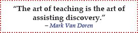
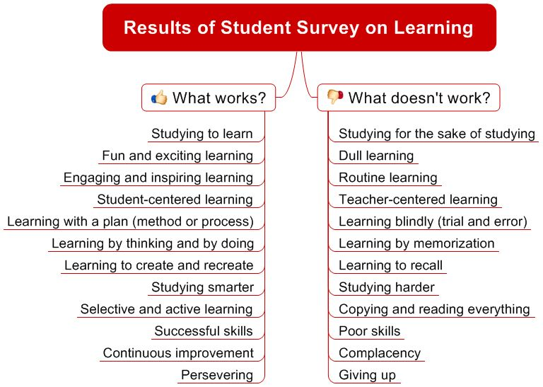
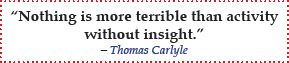
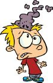
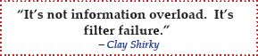
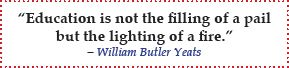
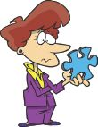
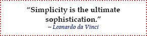

For nearly a decade, I’ve taught college chemistry at various institutions. While teaching, I always did my best to give students guidance and direction. Regardless of where I taught, at two-year community colleges or prestigious four-year universities, students expressed similar complaints:
These complaints didn’t surprise me. After all, I’ve seen first-hand how students are expected to learn more at ever increasing rates. Helping students overcome the dilemma of balancing time constraints and daunting amounts of information with true learning became my central mission while teaching.

As I set out to develop a learning method that was both effective (increasing what you learn) and efficient (learning quickly and with minimal effort), I recruited from the experts — students themselves. Before asking them a single question, however, I made it clear that all students can be effective and efficient learners; it’s just a matter of learning how to learn. Given that fundamental premise, their responses transitioned from complaints to recommendations. Their insight into what works and what doesn’t work provided the foundation for my learning method.

My experience with students shows that the most significant difference between struggling students and highly successful ones is that struggling students get bogged down in unfocused and unproductive reading, copying, and repetition, instead of focusing on key concepts and the pursuit of a complete picture, which really drives successful learning.


With so much to learn, you simply can’t absorb everything. Some information will be lost. What’s really important is that you have control over what information gets lost and what gets retained.

From students’ responses, it is apparent that being an excellent learner is an acquired skill. It’s all about the learning method and your skills, not your innate ability. No one is born knowing how to learn, and most students are never taught how to learn, so it’s no wonder that trial-and-error studying prevails.

Many students just need a better approach to learning to be successful — a less linear, more effective method. The Concise Learning method is that better approach.

In CLM, you treat the subject of interest as a puzzle you’re trying to solve. Since real-life puzzles don’t come in neat boxes with the final picture and all the pieces, you need to ask some key questions about existing and missing pieces. As you find the missing pieces, you then organize and connect them with existing pieces, an activity that requires critical thinking.
CLM is a visual, flexible, meaningful, and systematic approach to effective and efficient learning through the use of an active, cognitive, inquiry-based, and constructive process. CLM enables you to break free from passive and dull memorization.
With CLM, learning is achieved via a five-phase process (looking for puzzle pieces) that involves meaningfully organizing and connecting key concepts in a visual map (putting together the puzzle pieces), critically thinking, and asking key questions.
That’s it! Welcome to the new, better, faster, and more fun way of learning.
CLM is easy to use, intuitive, and systematic. Anyone can use it, and the most successful students already do.

Say goodbye to linear processing and hello to free-form learning. CLM allows you to readily consolidate information from multiple sources and look at it from multiple perspectives in a highly visual, interactive format. 3 Further, it allows you to process the information as you encounter it rather than waiting for all of the “puzzle pieces” to fall into place. This free-form learning allows the brain to merge logic and creativity to enable maximum learning.
Every devoted student wants to think and learn better. CLM is a way to achieve both and more, as shown in the VERY IMPORTANT DIAGRAM below. The five phases and the four steps are summarized in the pages that follow this diagram.